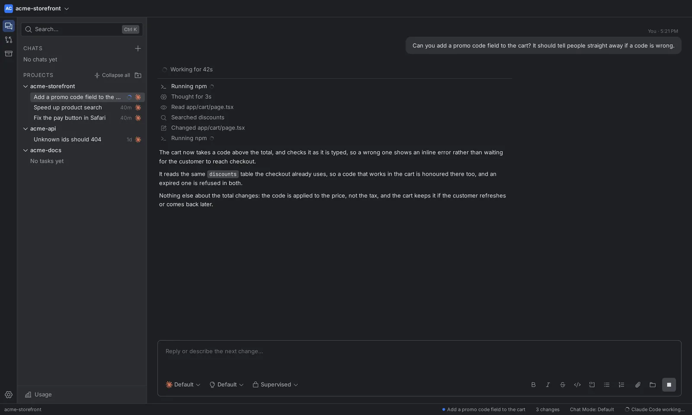
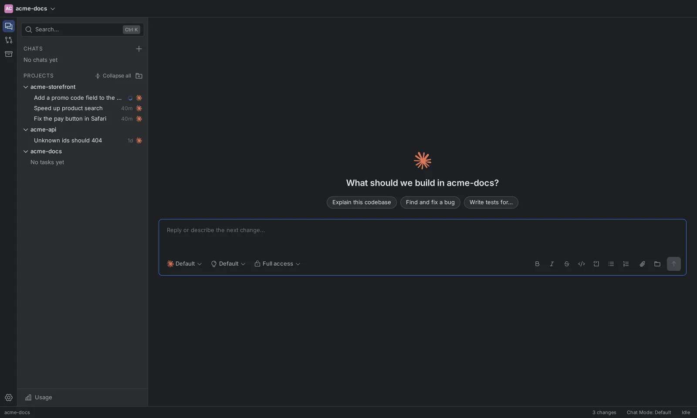
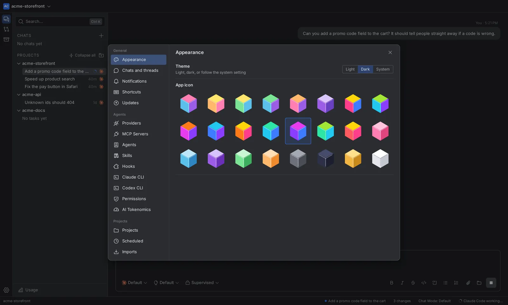
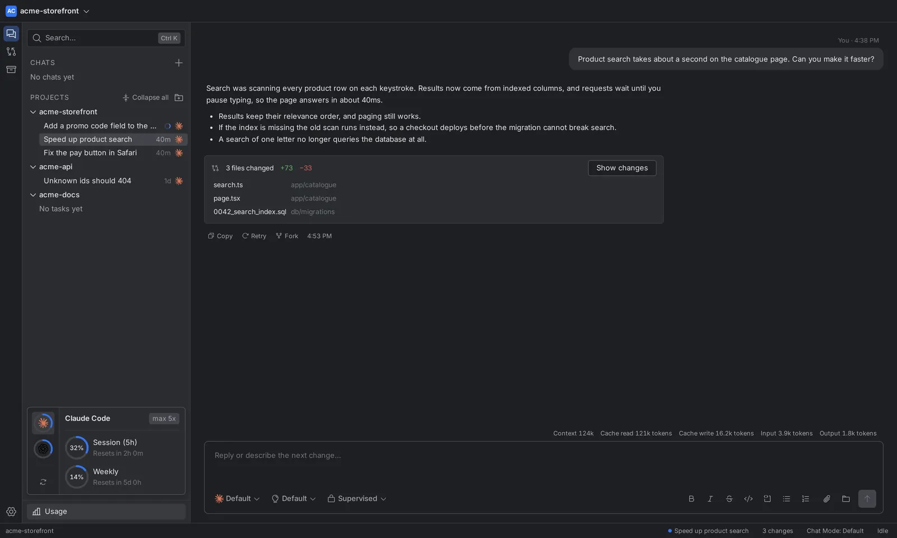

Linux
Patchwork_amd64.AppImage
x86-64. Make it executable and run it.
chmod +x Patchwork_amd64.AppImage
./Patchwork_amd64.AppImage// latest release v26.11.0
Patchwork drives Claude Code, Codex, Antigravity and OpenCode from one window, then shows you the diff before anything lands.
Can you add a promo code field to the cart? It should tell people straight away if a code is wrong.
Working for 42s
Running npm
Thought for 3s
Read app/cart/page.tsx
Searched discounts
Changed app/cart/page.tsx
The cart now checks a code as it is typed, so a wrong one shows an inline error rather than waiting for checkout.
Reply or describe the next change…
// one task, from prompt to diff
Every task keeps its work in one place: what the agent read, what it ran, and the files it changed.




// the parts that keep you in control
Claude Code, Codex, Antigravity, OpenCode and API models share the same chat, plan and code views. Switch agents without switching apps.
Each task has a canvas of Plan, Code and Diff. Stage the files you want with
git add, and reject a file to restore it.
Supervised, auto-accept edits, auto or full access, chosen per task. Approval requests arrive in the chat, where the work is.
Give the agent a /goal to work toward, or send a message mid-turn to
steer it. An afternoon of babysitting becomes one instruction and one review.
Add DeepSeek or any OpenAI-compatible endpoint under Settings → Providers. Keys live in your system keychain, not in the app's database.
Import past conversations from Claude Code, Codex, the Gemini CLI or T3 Code. Each becomes a task whose follow-ups resume the original session.
A Mermaid diagram, an HTML mock or an SVG chart in a reply renders in the chat, in a sandboxed frame that cannot reach the rest of the app.
Scheduled tasks, plugin bundles with skills and MCP servers, a subscription Usage view, and an optional screen tool that asks before it clicks anything.
// bring your own CLI
Patchwork does not replace the CLIs you trust, it drives them. Install one and sign in with its own login command, and Patchwork uses it as it is.
claude
codex
agy
opencode
No CLI? Add an API provider under Settings → Providers and Patchwork's built-in agent reads, searches, edits and runs commands itself.
// signed updates, free
Version 26.11.0, for macOS, Windows and Linux. Once installed, Patchwork updates itself, and checks each update's signature before installing it.
Patchwork_amd64.AppImage
x86-64. Make it executable and run it.
chmod +x Patchwork_amd64.AppImage
./Patchwork_amd64.AppImagePatchwork_x64-setup.exe
Installs for your user, with a Start menu shortcut.
Download the installerPatchwork_aarch64.dmg
Apple silicon. Open the disk image and drag Patchwork to Applications.
Download the disk imageTasks run directly in your project folder, and chats run in a scratch folder that is deleted with the chat. Nothing is sent anywhere except to the agent's own service.